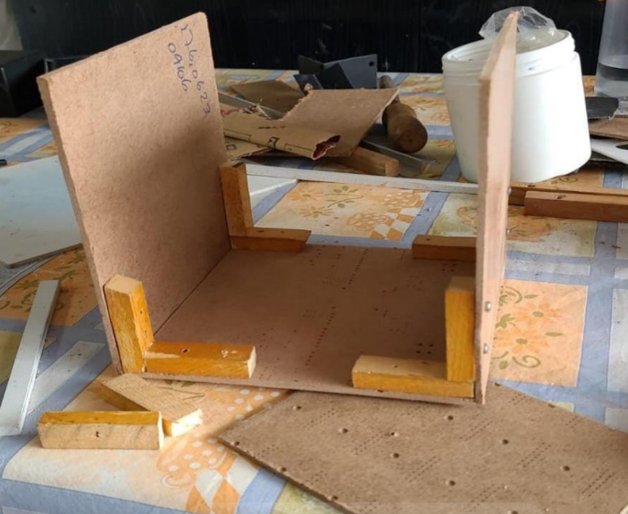
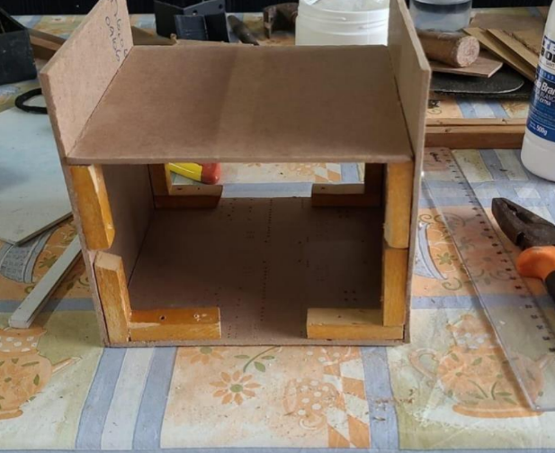
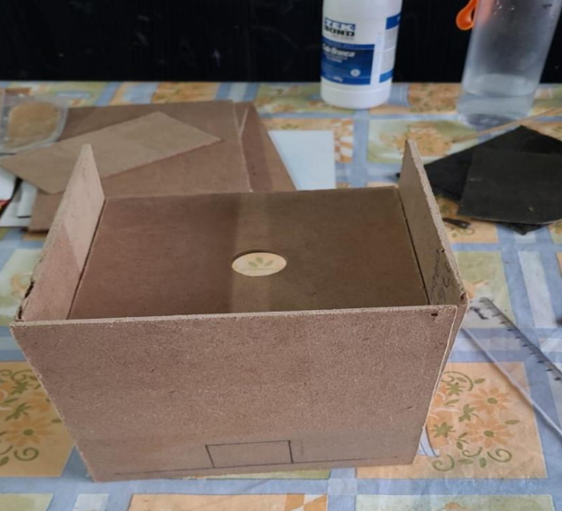
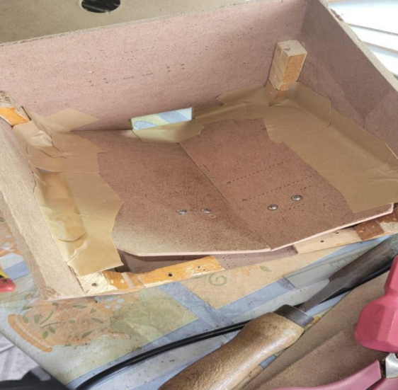
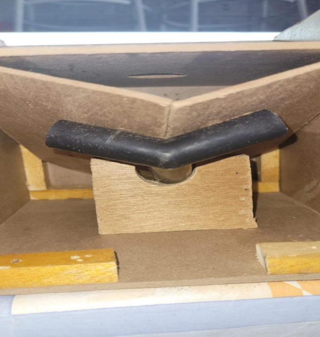
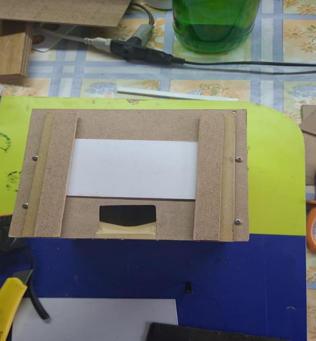
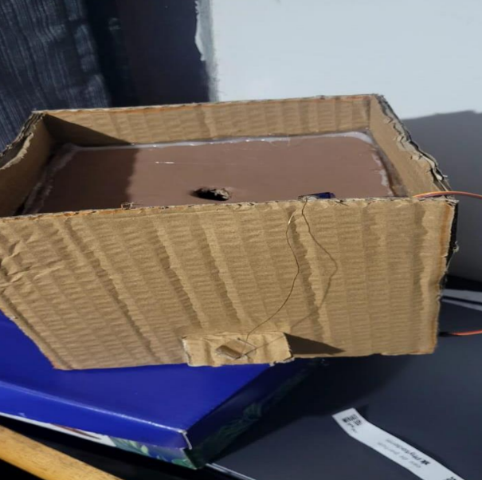

Internet das Coisas - Projeto de IoT

Matematica
Glauco P Silva
Atividade do Carrinho Arduino
Equipe: Andrei Rocha, Felipe Costa, Kauã Humberto e Mateus Kelm
Relatório do Projeto
O projeto do carrinho seguidor de linha foi desenvolvido como parte do curso de IoT da turma 1 do Senac Nações Unidas, com o objetivo de integrar a robótica ao aprendizado da Internet das Coisas.
Materiais Utilizados
- Kit de robótica Arduino (placa Arduino, motor, rodas, sensores de linha, etc.)
- Software Arduino IDE
- Ferramentas de solda (opcional)
- Tinkercad para simulação
- Câmera ou celular para registro de fotos e vídeos
Montagem e Programação
O projeto foi montado seguindo os tutoriais disponíveis. As etapas envolveram a montagem física do carrinho, a programação do código de controle e a realização de testes.


Vídeo do Projeto
Atividade do Boné - Sensor de Ré
Objetivo: Criar um sistema inovador incorporado a um boné que funcione como sensor de ré, detectando objetos próximos e emitindo sinais de alerta.
Dia 1
O código foi concluído e os componentes estavam funcionando corretamente, mas não conseguimos finalizar o projeto devido à falta de materiais (boné e bateria).

Dia 2
No segundo dia, a atividade foi frustrante devido a erros de conexão no Arduino e a falta de materiais essenciais. No entanto, conseguimos identificar os problemas.

Dia 3
Finalmente, conseguimos realizar a montagem corretamente, integrar todos os componentes e fazer o sistema funcionar perfeitamente.


Integração com as Disciplinas
Ciências da Natureza

Física
Estudo dos sensores ultrassônicos e análise dos componentes eletrônicos utilizados.
Química
Investigação sobre os materiais dos componentes eletrônicos e impactos ambientais.
História
Pesquisa sobre a evolução dos sensores e eletrônica vestível.
Geografia
Análise do impacto ambiental da produção e descarte dos componentes.
Matemática
Cálculos para determinar distâncias e ajustar a sensibilidade dos sensores.
Atividade do 4° Bimestre - Dispenser de Ração
INTRODUÇÃO
O objetivo deste projeto é desenvolver um dispensador de ração automatizado, controlado
por tempo, utilizando a plataforma Arduino. O dispensador será projetado para liberar a
quantidade de ração de forma precisa e programada, permitindo a alimentação de animais de
estimação em horários específicos, sem a necessidade de intervenção manual. O sistema
incluirá mecanismos para acionar a dispensa de ração no momento determinado. A solução
será composta por um conjunto de componentes eletrônicos integrados e será programada de
forma eficiente para garantir o funcionamento adequado e confiável
Dia 1
No primeiro dia foi sorteado o tema para nós e ficamos com o projeto do carrinho com
sensor de ré. Como o sorteio foi no fim da aula não deu tempo para começar o trabalho

Dia 2
O segundo dia foi um tremendo fracasso. Nesse dia estavamos com problemas na
montagem do projeto anterior que era o do carrinho. Estavamos tendo problemas pois não
chegava energia na ponte H. Conversamos com o professor e ele disse que ia pensar em alguma
coisa para resolver

Dia 3
Nesse dia tentamos fazer funcionar de todo o jeito, mas infelizmente nada funcionava.
Conversamos com o professor e ele deu a possibilidade de trocarmos de projeto. O professor
mandou a gente escolher entre dois projetos e escolhemos fazer o do dispensador de ração
automatizado.

Dia 4
Nesse dia tentamos fazer funcionar de todo o jeito, mas infelizmente nada funcionava.
Conversamos com o professor e ele deu a possibilidade de trocarmos de projeto. O professor
mandou a gente escolher entre dois projetos e escolhemos fazer o do dispensador de ração
automatizado.

Dia 5
Como o display estava dando problemas, levamos ele para a escola para fazer alguns teste e
tentar resolver o mais rápido possível esse problema, pois já estávamos ficando sem tempo.
Depois de muitos testes, conseguimos arrumar o display e agora com o display funcionando,
dava para montar o sistema elétrico

Dia 6
Como o display estava dando problemas, levamos ele para a escola para fazer alguns teste e
tentar resolver o mais rápido possível esse problema, pois já estávamos ficando sem tempo.
Depois de muitos testes, conseguimos arrumar o display e agora com o display funcionando,
dava para montar o sistema elétrico

CONCLUSÃO
Depois de muitos desafios e dificuldades ao longo do desenvolvimento do projeto, conseguimos
concluir o dispensador de ração automatizado. Mesmo enfrentando problemas como a falta de
energia na ponte H no projeto inicial e o mau funcionamento do display no projeto atual, não
desistimos e continuamos trabalhando até encontrar as soluções necessárias.
O processo foi cheio de aprendizado, desde a montagem do circuito até a programação do
Arduino, e nos mostrou a importância de persistir diante dos obstáculos. Conseguimos integrar
todos os componentes e concluir o projeto deixando tudo pronto para os testes e para a
apresentação na escola. Essa experiência foi muito valiosa para nossa formação e superou
nossas expectativas.

Vídeo do Projeto
Video da Turma

Organização dos Armários da Turma
Cada grupo possue um kit com identificação de alunos e sala. Dentro dos kits temos um local especifico para guardar cada componente de forma que fique tudo organizado.